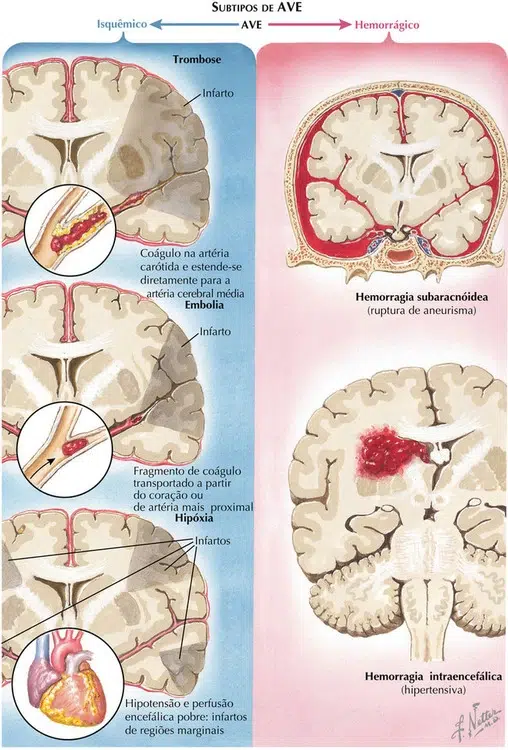
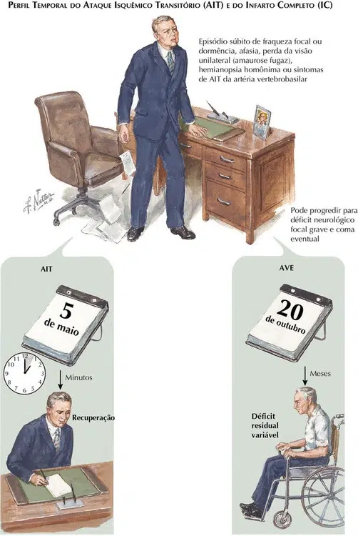

Os acidentes vasculares são divididos em duas grandes categorias: hemorragia e isquemia.
A hemorragia se refere ao sangramento dentro do crânio, no encéfalo ou de líquido cerebroespinal ou membranas que envolvem o encéfalo.
A isquemia se refere ao fluxo sanguíneo insuficiente.
A isquemia encefálica é muito mais comum do que a hemorragia. Cerca de quatro quintos dos AVEs são isquêmicos.
É extremamente normal ouvirmos dois termos para descrição dos acidente vasculares:
AVC (Acidente vascular cerebral): É o termo mais popular e consagrado, utilizado pelo Ministério da Saúde.
AVE (Acidente vascular encefálico): É a nomenclatura anatômica mais precisa, preferida por muitos profissionais de saúde e acadêmicos.
Quando a isquemia é prolongada ela leva à morte do tecido – infarto.
Há três grandes categorias diferentes de isquemia encefálica: – trombose, embolia e hipoperfusão sistêmica; cada uma indica um mecanismo diferente de lesão vascular sanguínea ou razão para diminuição do fluxo sanguíneo.
A diferença entre estes mecanismos é mais fácil de ser compreendida usando a analogia do encanamento de uma casa.
Suponha que ao ligar a torneira do banheiro do segundo andar, não resulte em nenhum fluxo, ou ainda, resulte em água gotejando para fora. O mau funcionamento pode ser devido a um problema local, como o acúmulo de ferrugem na tubulação de fornecimento que desce. Isto é análogo à trombose, um termo utilizado para descrever um problema local que envolve o fornecimento de uma artéria para o encéfalo. A aterosclerose ou outra condição, muitas vezes estreita o lúmen arterial. Quando o lúmen se torna muito estreito, o fluxo sanguíneo é gravemente diminuído, causando estagnação localizada da coluna de sangue. Esta mudança no fluxo provoca a coagulação no sangue, resultando em oclusão arterial total. Este é um problema local em um cano; um encanador tentaria consertar o cano bloqueado danificado. Da mesma forma, os médicos tratam tentando abrir ou derivar uma artéria estenótica ou ocluída.
Em alternativa, o bloqueio do cano da pia do segundo piso pode ser devido a detritos do sistema de água que vieram a se depositar no cano em vez de um problema local que tenha começado no interior do cano. Uma artéria craniana ou do pescoço que supre o encéfalo pode se tornar bloqueada por trombos ou outras partículas que se rompem a partir de um local anterior. A fonte pode ser a partir do coração, da aorta, ou a partir de uma grande artéria no pescoço ou na cabeça localizada antes da artéria bloqueada, ao longo do mesmo trajeto circulatório. O processo de partículas se soltando e bloqueando artérias distantes é conhecido como embolia. A fonte do material é chamada de local doador e o vaso de destino é chamado de local receptor. O material é chamado de êmbolo e o processo é chamado de embolia. O tratamento da embolia pode envolver o desbloqueio da artéria ocluída e também a tentativa de evitar mais embolização.
Outra razão para o baixo fluxo na pia do segundo andar pode ser um problema geral com a caixa d’água, a bomba de água ou a pressão da água. Neste caso, o fluxo através de todas as tubulações da casa deve ser afetado. Abrir as torneiras em outras partes da casa vai revelar a natureza do problema. No corpo, este tipo de problema é chamado de hipoperfusão sistêmica. O desempenho cardíaco anormal pode levar à baixa pressão do sistema. Ritmos cardíacos anormalmente lentos ou rápidos, parada cardíaca e insuficiência do coração em bombear sangue adequadamente podem levar a diminuição da perfusão encefálica. A hipotensão e a hipoperfusão devido a uma quantidade insuficiente de líquido no compartimento vascular do corpo são outras causas. Hemorragia, desidratação e choque levam a perfusão encefálica inadequada. Isso seria semelhante a ter um baixo reservatório de água.
Em pacientes com embolia encefálica e trombose, uma artéria geralmente está bloqueada, causando disfunção da parte do encéfalo suprida por esta artéria bloqueada. Isso provoca anormalidades focais na função encefálica, como afasia ou hemiparesia. Estas anormalidades são similares àquelas encontradas em pacientes com hematomas encefálicos locais. Em contraste, a hipoperfusão sistêmica conduz a mais anormalidades difusas, tais como tonturas, vertigens, confusão, déficit da visão e da audição e assim por diante. Os pacientes aparentam palidez e fraqueza geral. Estes sintomas são atribuíveis a uma redução generalizada no fluxo sanguíneo e não à perda da função em uma região local do encéfalo.
Os quatro tipos de hemorragia são nomeadas pelas suas localizações:
Os diferentes locais de sangramento têm causas diferentes.
As hemorragias intracerebrais se desenvolvem gradualmente e estão localizadas entre os tecidos normais do encéfalo. O sangramento é devido à ruptura de pequenos vasos sanguíneos, arteríolas e capilares dentro do tecido encefálico.
O sangramento é, na maioria das vezes, devido à hipertensão não controlada. O sangue normalmente entra no encéfalo sob pressão e forma um hematoma localizado. Os hematomas também exercem pressão sobre as regiões encefálicas adjacentes à coleção de sangue e pode lesar estes tecidos. Grandes hemorragias são muitas vezes fatais porque aumentam a pressão dentro do crânio comprimindo o tronco encefálico.
As hemorragias subaracnóideas são geralmente causadas por ruptura de um aneurisma que libera sangue instantaneamente no líquido cerebroespinal. A liberação repentina de sangue sob pressão arterial aumenta a pressão intracraniana causando intensa dor de cabeça de início súbito, muitas vezes com vômitos e muitas vezes com um lapso no funcionamento encefálico de modo que os pacientes podem arregalar os olhos, cair de joelhos, se tornar confusos ou incapazes de se lembrar.
As hemorragias subdural e epidural são mais frequentemente causadas por traumas na cabeça que rompem vasos sanguíneos.
Nas hemorragias subdurais, o sangramento é normalmente a partir de veias localizadas entre a aracnoide e a dura-máter.
Em hemorragias epidurais, o sangramento resulta muitas vezes em rupturas de artérias das meninges.
O sangramento arterial se desenvolve mais rapidamente que o sangramento venoso de modo que os sintomas se desenvolvem mais precocemente após o trauma da cabeça em pacientes com hemorragias epidurais. Em hemorragias subdurais, o sangramento pode ser lento de modo que os sintomas podem ser retardados por semanas após o trauma craniano.

Em pacientes com hemorragia intracerebral, os sinais e sintomas se desenvolvem gradualmente ao longo de minutos ou horas. Melhoras e flutuações não ocorrem durante este tempo. Em uma hemorragia subaracnóidea aneurismática, os sintomas começam instantaneamente.
Na isquemia, a gravidade da diminuição da perfusão, a habilidade da circulação colateral para acomodar os bloqueios e a vulnerabilidade das várias estruturas encefálicas variam muito.
A subperfusão pode ser temporária, resultando em um déficit focal que dura apenas alguns minutos; estes episódios são conhecidos como ataques isquêmicos transitórios (AITs). Algumas vezes a isquemia é suficiente para causar maior persistência dos sinais e sintomas, mas não é suficiente para causar infarto encefálico. O tecido encefálico fica enfraquecido, mas pode se recuperar se o fornecimento de nutrientes for restaurado rápido o suficiente. Em pacientes isquêmicos, o curso de tempo varia e pode flutuar com períodos de melhora, piora e estabilização.
Ataques isquêmicos transitórios são muito importantes de serem reconhecidos. Muitos estudos mostram que pacientes com AIT têm um alto risco para o AVE durante as horas e dias sucessivos. O AIT exige diagnóstico e administração da causa com urgência.
Os AITs fornecem uma janela de oportunidades para os médicos intervirem antes que um AVE ocorra, e os AVEs acontecem frequentemente em pacientes que tiveram AITs. A maioria dos AITs é muito breve durando minutos e geralmente menos de uma hora.
Recentes estudos de ressonância magnética (RM) em pacientes com AITs clínicos que não têm sinais ou sintomas residuais mostram que muitos, na verdade, tiveram infartos cerebrais – AVEs.
A distinção entre os AITs e os AVEs está desfocada e foi subestimada no passado. Muitos médicos agora preferem o termo síndrome cerebrovascular sistêmica aguda, que inclui tanto os AITs quanto os AVEs agudos. A conduta depende da natureza, localização e gravidade das causas cardiológicas, cerebrovasculares e hematológicas da isquemia encefálica.
Encontrar a causa e o tratamento é muito mais importante do que a caracterização do curso e do tempo.
As estratégias terapêuticas se referem a quatro diferentes épocas de tempo:
A prevenção envolve estratégias de identificação e controle de potenciais fatores de risco antes de o AVE ocorrer. As estratégias durante a isquemia aguda envolvem reperfusão da área isquêmica e neuroproteção (tornando a área isquêmica mais resistente ao infarto). Após o AVE, a recuperação e a reabilitação são indicadas.
